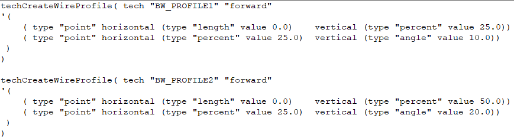
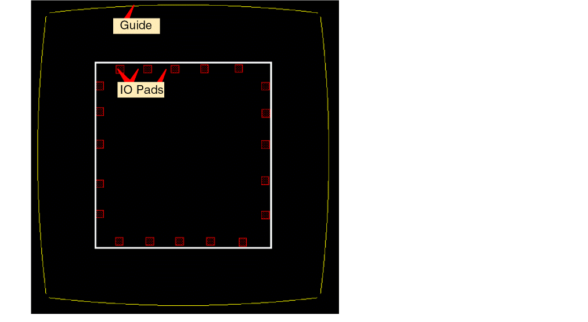

Bond Wires and Bond Fingers Creation
Bond wires are wires of very fine diameter, typically made of aluminum, copper, silver, or gold, that connect the die IO pads to the package substrate. Virtuoso provides options to create and edit bond wires.
Virtuoso supports both freestyle and guide-based placement of bond wires. Bond wires can originate from level-1 pins or die IO pads and end in a guide or selected points in the canvas. You can also create bond wires from bond fingers to guides. Before creating bond wires and bond fingers, ensure the following:
-
The wire profiles are defined in the technology file using the
techCreateWireProfileSKILL function:
 -
For guide-based placement, the guides are in place.

Related Topics
Creating Bond Wires and Bond Fingers
Creating Bond Finger Definitions
Updating the Finger Attach Point
Return to top